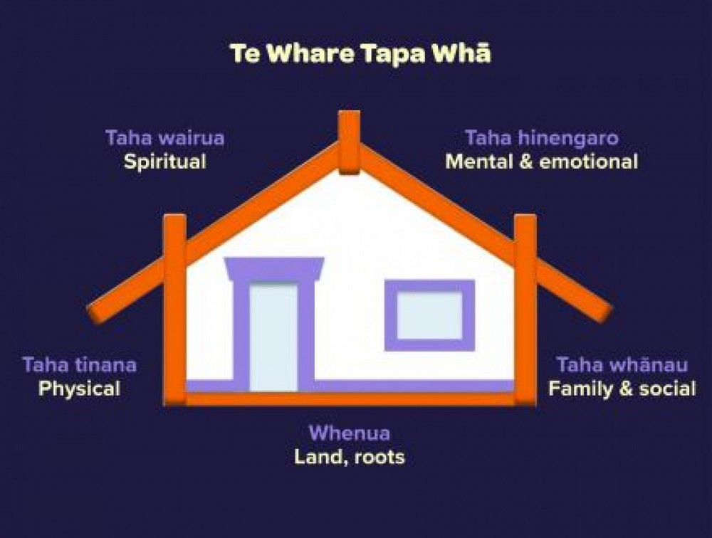

15 April 2025
Te Whare Tapa Whā
Te Whare Tapa Whā was developed by leading Māori health advocate Sir Mason Durie in 1984. The model describes health and wellbeing as a wharenui/meeting house with 4 walls. When we look after all 4 aspects, we look after our hauora/wellbeing. Checking in on the 4 pillars helps us balance our hauora and support others to balance theirs, too. These four parts are like the four walls of a house. If one wall is weak, the house is not strong. This is the same for our wellbeing.
These walls represent:
-
taha wairua – spiritual wellbeing
Taha wairua explores your relationship with the environment, people and heritage in the past, present and future.
The way people view wairua can be very different. For some, wairua is the capacity for faith or religious beliefs or having a belief in a higher power.
Others may describe wairua as an internal connection to the universe. There is no right or wrong way to think of or experience wairua,
but it is an important part of our mental wellbeing. Find ways to keep your spirits high.
Listen to uplifting waiata/music, attend online karakia sessions, soak up the rays of the sun or listen to native manu/birds like tui or ruru. -
taha hinengaro – mental and emotional wellbeing
Just like your physical health, your taha hinengaro/mental and emotional wellbeing needs to be taken care of. Taha hinengaro is your mind, heart, conscience, thoughts and feelings. It’s about how you feel, as well as how you communicate and think. Keep your mind active with things like learning karakia/prayer, waiata/music or mau rākau/Māori weaponry. Try reading some pūrākau/stories or whakapapa about your ancestors or the days of old.
Tune in to some of the online wānanga/workshops available such as learning te reo Māori. -
taha tinana – physical wellbeing
Taha tinana is about how your body feels and how you care for it. Refuelling your body helps you to feel mentally well.
Sometimes your tinana might not be where you’d like it to be and this might be beyond your control. What’s important is that you do what you can to nurture it.
Staying physically well is important. Try walking or practising mau taiaha/Māori weaponry or even kapa haka. -
taha whānau – family and social wellbeing.
Taha whānau is about who makes you feel you belong, who you care about and who you share your life with.
Whānau is about extended relationships – not just immediate relatives. It’s your hoamahi/colleagues, friends, community and the people you care about.
You have a unique place and a role to full within your whānau and your whānau contributes to your wellbeing and identity. Keeping in touch is so important. Send aroha from afar by holding regular online or phone catch ups with your whānau and kaumatua.
Connect more with whānau and friends kanohi ki te kanohi/face-to-face.

Photo credit: mentalhealth.org.nz
Resource-
Whenua - connection with the land or environment
Whenua is the place where you stand. It is your connection to the land – a source of life, nourishment and wellbeing for everyone.
Whenua includes soil, rocks, plants, animals and people – the tangata whenua. We are linked physically and spiritually to the land
it is the earth through which you are connected to your tūpuna/ancestors and all the generations that will come after you.
You can also think about whenua as your place of belonging – that means the spaces where you feel comfortable, safe and able to be yourself.
It could be around your friends, at home with whānau, as part of a sports team or even at your place of study or mahi/work.
By nurturing and strengthening all 5 dimensions, you support your health and wellbeing, as well as the health and wellbeing of your whānau.
My Wellbeing Plan
This is my plan for looking after my health while I am studying.
| Part of Wellbeing | What I will do |
|---|---|
| Taha Tinana (Physical Wellbeing) |
I will go for a walk or do stretcing when I feel tired. I will drink more water during the day. ----------------------------------------------------------------------------- |
| Taha Whānau (Family Wellbeing) |
I will message or call my family more often to stay connected. I will spend more time with friends when I have free time. ----------------------------------------------------------------------------- |
| Taha Hinengaro (Emotional and Mental Wellbeing) |
I will listen to podcart or music that make me feel calm. I will take a short break from study when I feel stressed. ----------------------------------------------------------------------------- |
| Taha Wairua (Spiritual Wellbeing) |
I will start the day with a quiet moment and be thankful for small things. I will enjoy nature and feel grateful for life around me. ----------------------------------------------------------------------------- |
| Whenua (the Land and Environment) |
I will go outside and feel the fresh air every day,even if just a few minutes. I will walk baewfoot on the glass at the park. ----------------------------------------------------------------------------- |
Looking after these parts of my life will help me feel good, stay healthy, and enjoy learning more. It will also help me balance my study with my everyday life.
Learn more about Te Whare Tapa Whā